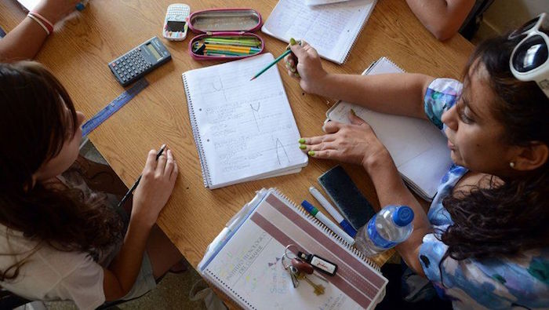
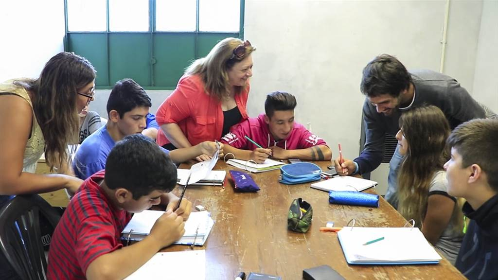
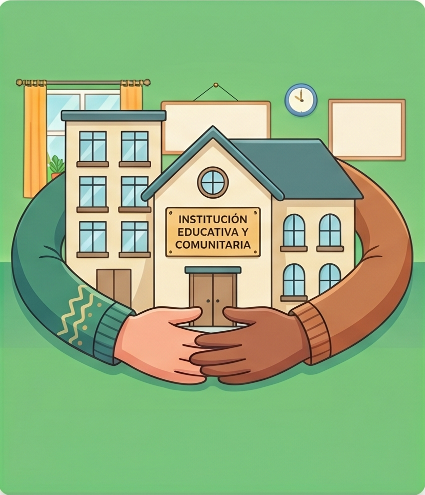
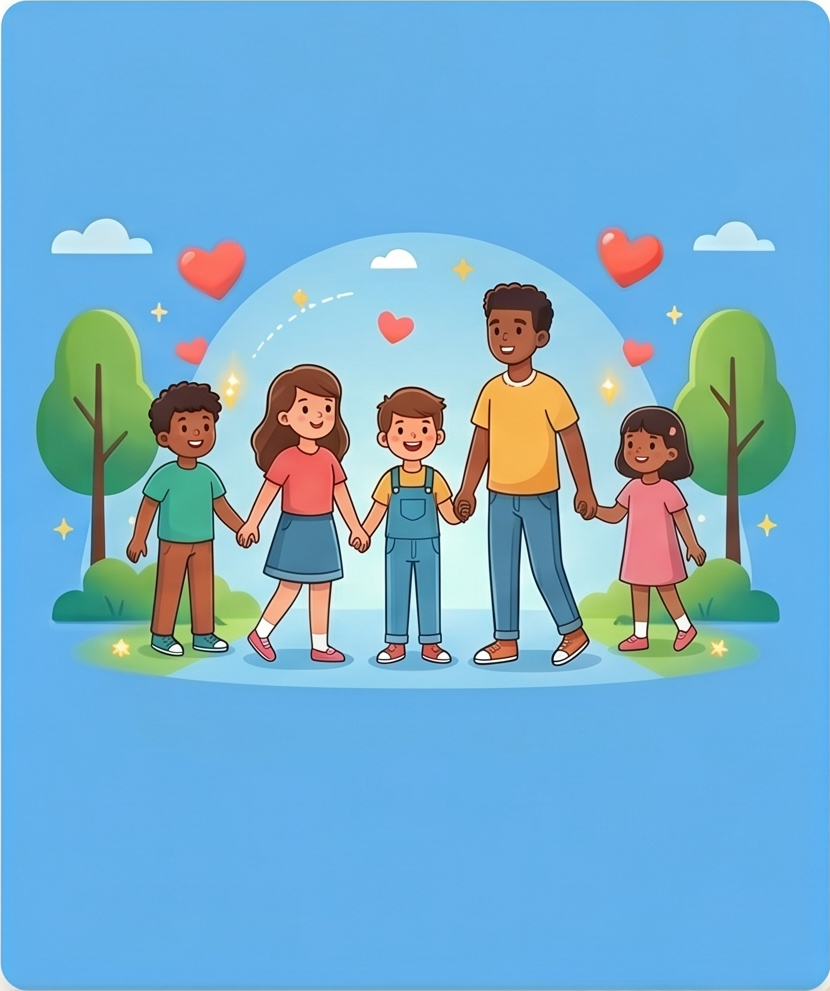

LLENOS




Tu tiempo puede cambiar una historia.
Quiero ser voluntarioDe niños en situación
de pobreza
De alumnos no asiste
a clases en PBA
Jóvenes no finaliza la
secundaria
No alcanza
matemática básica
Alcanza lectura
esperada
Cuadernos Llenos es una organización social fundada en 2018 que trabaja para reducir el rezago educativo y prevenir el abandono escolar en niños y adolescentes de contextos vulnerables.
Creamos espacios gratuitos de apoyo escolar en distintos barrios del Conurbano Bonaerense (GBA) donde estudiantes pueden hacer tareas, resolver dudas y fortalecer hábitos de estudio junto a tutores y voluntarios comprometidos con la educación.
Creemos que aprender no debería depender del contexto económico, del acceso a un profesor particular o de tener un lugar silencioso para estudiar.
Nuestro objetivo es construir una red comunitaria que acompañe a cada estudiante para que pueda permanecer en la escuela y desarrollar su potencial.

Bibliotecas, escuelas y centros comunitarios
Voluntarios comprometidos con la educaciónMunicipios
alcanzados
Puntos de
encuentro
activos
Tutores y
voluntarios
Niños y adolescentes
acompañadoss